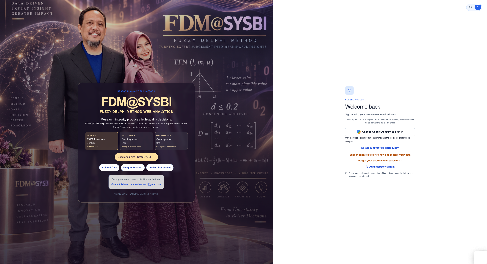
01Secure access and subscription entry
The landing screen gives researchers a protected route into FDM@SYSBI, with language choice, sign-in, registration and subscription access in one place.
Complete every research stage safely and confidently, from Procedure A to Procedure G. FDM@SYSBI guides your workflow, protects response data and reduces human error while turning expert judgement into defensible Fuzzy Delphi evidence.
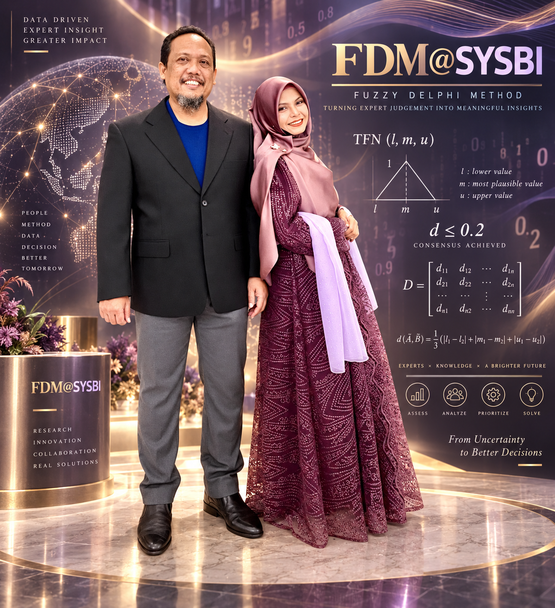

01The landing screen gives researchers a protected route into FDM@SYSBI, with language choice, sign-in, registration and subscription access in one place.
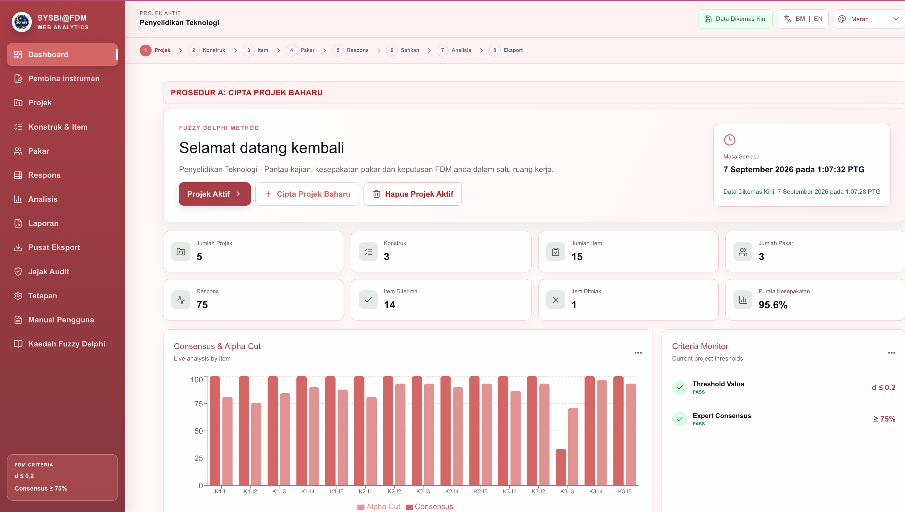
02The dashboard shows active project history, project counts, constructs, items, experts, response volume, accepted or rejected items, live consensus and the Consensus & Alpha Cut chart.
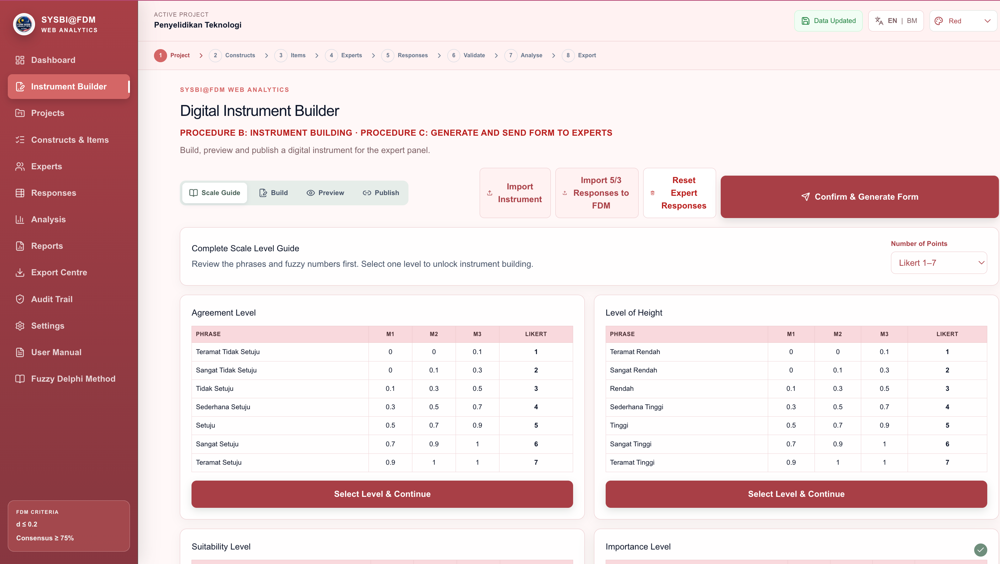
03Start Procedure B by selecting the response scale and reviewing the fuzzy numbers behind each Likert phrase. The guide covers agreement, height, suitability and importance levels before the instrument is built.
 04
04Create or select a project, record the study title, researcher, organisation, date, Likert scale, decimal places and research objective, then save and continue with a complete project record.
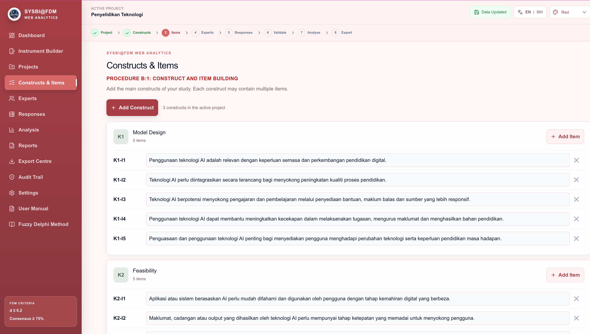
05Build the instrument structure by naming constructs such as K1 and adding item codes such as K1-I1. Clear codes keep expert scoring, analysis and reports aligned from beginning to end.
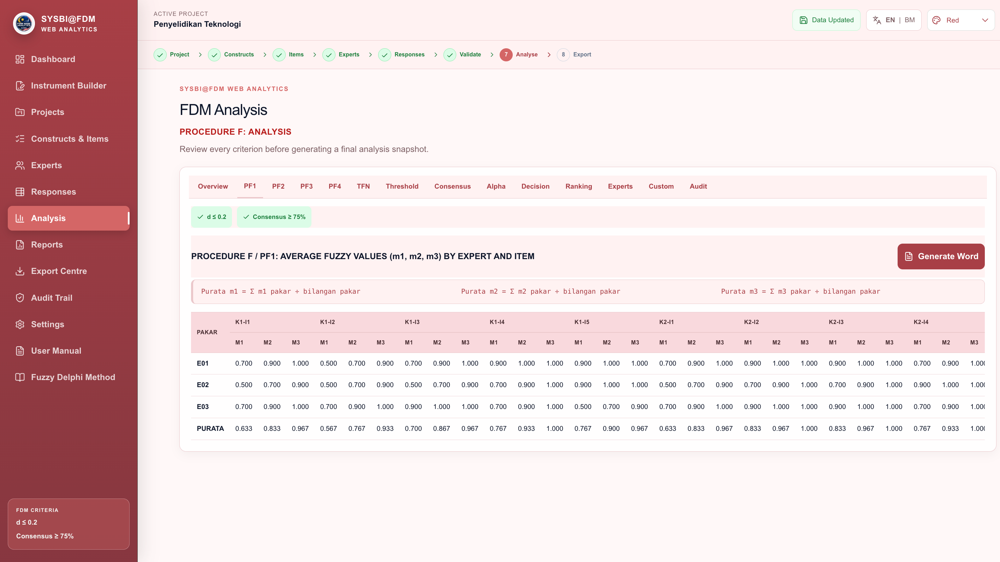
06Review Overview, PF1, PF2, PF3 and PF4 together with the project criteria. The analysis workspace exposes formulas, expert-level values, consensus checks and Word export so every result can be reviewed.
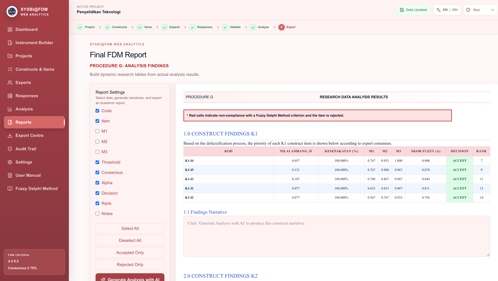
07Assemble the final findings report by selecting the required columns, filtering accepted or rejected items, adding construct narratives and exporting an evidence-based report for academic use.
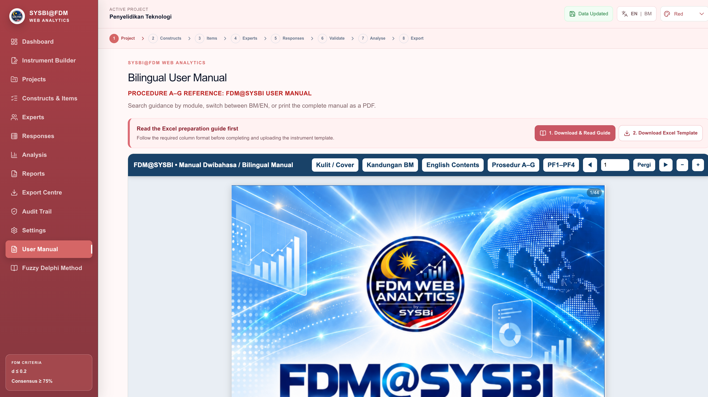
08Open the bilingual manual, jump to the relevant pages, download the Excel preparation guide and template, and print the complete reference when a step-by-step explanation is needed.
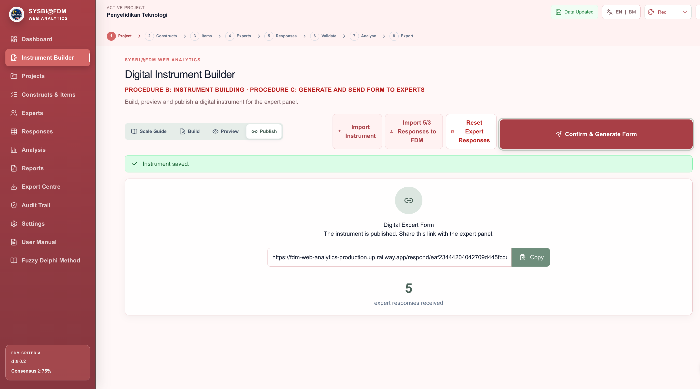
09After publishing, FDM@SYSBI creates a dedicated Digital Expert Form link. Copy it and send it to the intended expert panel while tracking the number of responses received.
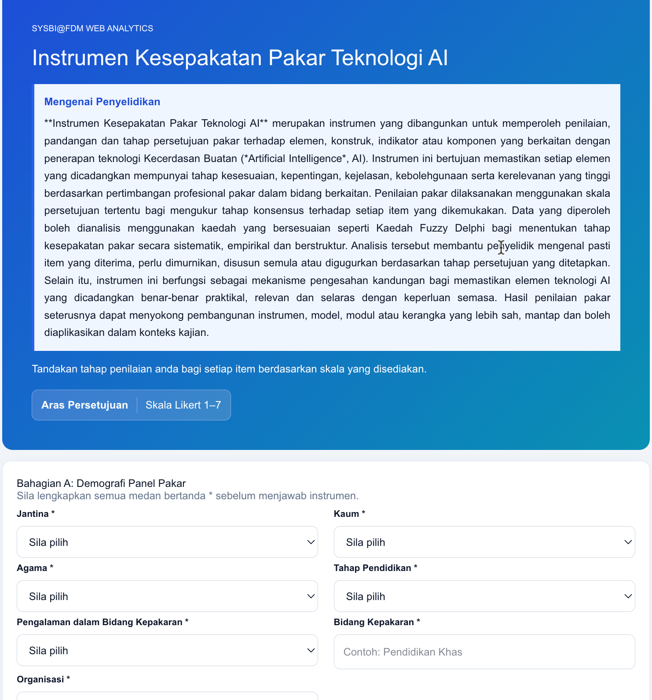
10The respondent form begins with the required demographic profile—gender, race, religion, education, experience, expertise and organisation—before the expert rates the research items.
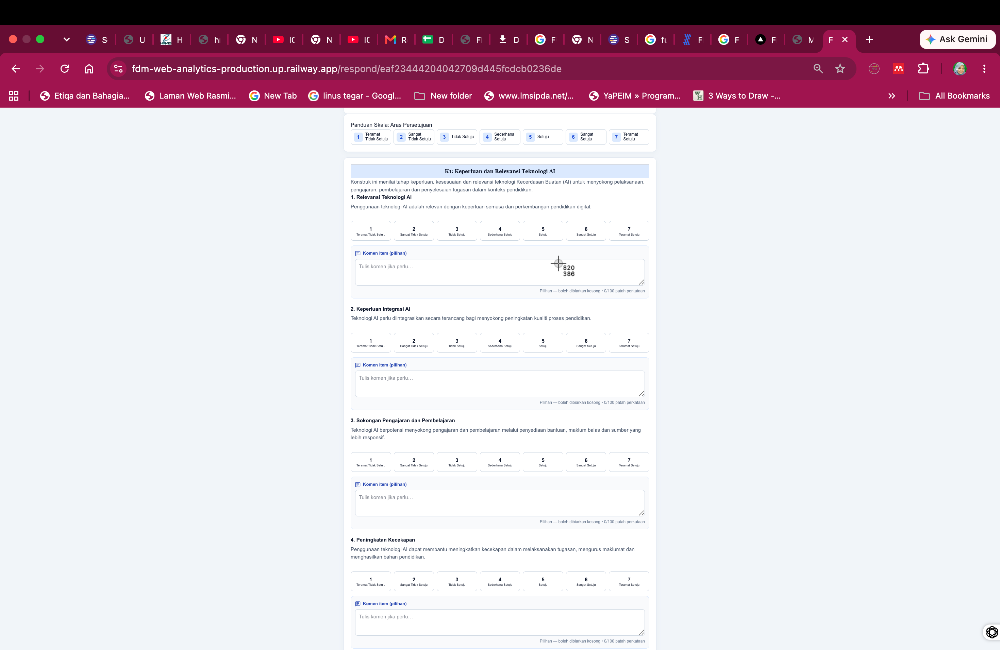
11Experts select one of seven agreement levels for each item and may add an optional item comment. The layout keeps the item statement, Likert scale and comment field together for a focused response.
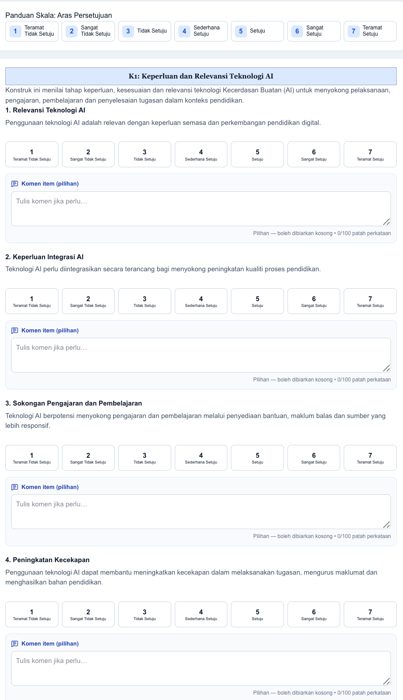
12The guided response layout continues across constructs and items, keeping every rating and optional comment tied to the correct code so no response is lost or assigned to the wrong item.
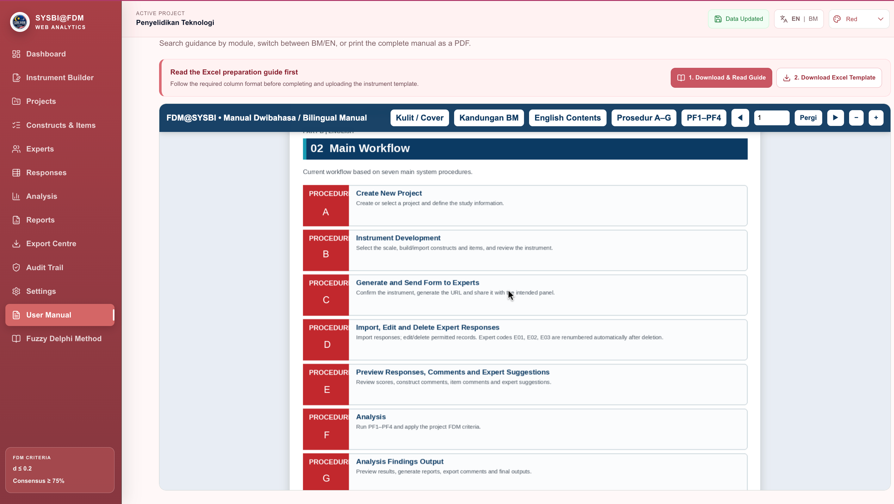
13The manual explains the complete seven-procedure journey: create a project, build the instrument, generate and send the form, import or edit responses, preview comments, analyse the data and produce findings.
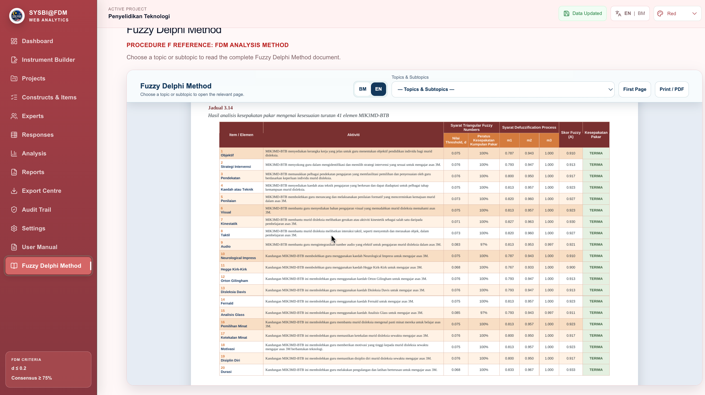
14The Fuzzy Delphi reference view presents item or element activity alongside threshold d, consensus percentage, m1, m2, m3, fuzzy score A and expert consensus, with BM or EN selection and print or PDF controls.
Set up a project and define your constructs and items.
Generate a form and invite your expert panel.
Import responses, review comments and read the FDM findings.
Create a new project, define constructs and items, then generate a professional digital instrument for your panel.
Import expert responses securely. Review construct comments, item comments and suggestions before analysis.
Follow average fuzzy values, threshold d, consensus percentage and the defuzzification process with transparent formulas.
Export Word, Excel and PDF outputs for supervisors, collaborators and publication workflows.
Start focused. Grow when your research needs it.